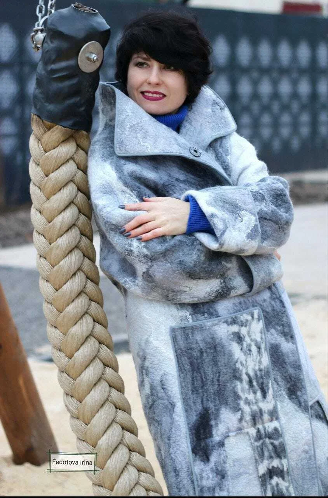
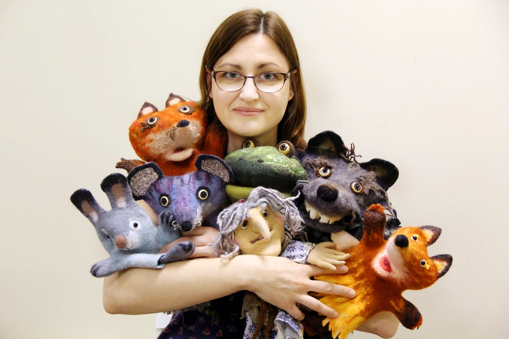
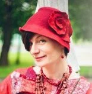
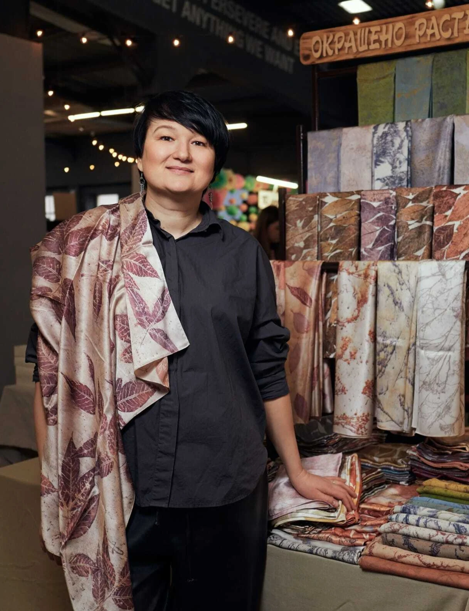
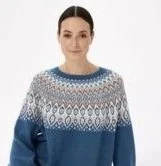
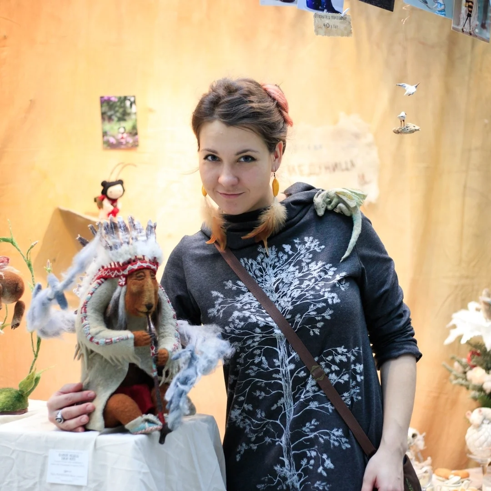
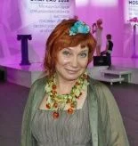
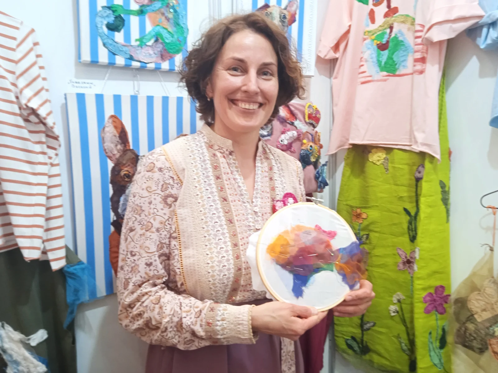

Ирина ФедотоваМокрое валяние
Работы и занятияВыберите мастера, рассмотрите его работы и откройте занятие с датой и условиями записи.

Ирина ФедотоваМокрое валяние
Работы и занятия
Елена РагулинаМокрое валяние
Работы и занятия
Юлия ЛевшинаМокрое валяние
Работы и занятия
Ирина УткинаЭкопринт
Работы и занятия
Маргарита ТамервулВязание
Работы и занятия
Маруся НовокрещеноваСухое валяние
Работы и занятия
Ольга ФилатоваМокрое валяние
Работы и занятия
Ольга ЩевелёваТекстильная аппликация
Работы и занятияНунофелтинг
Работы и занятияСухое валяние
Работы и занятияРоспись ткани
Работы и занятияСухое валяние
Работы и занятия